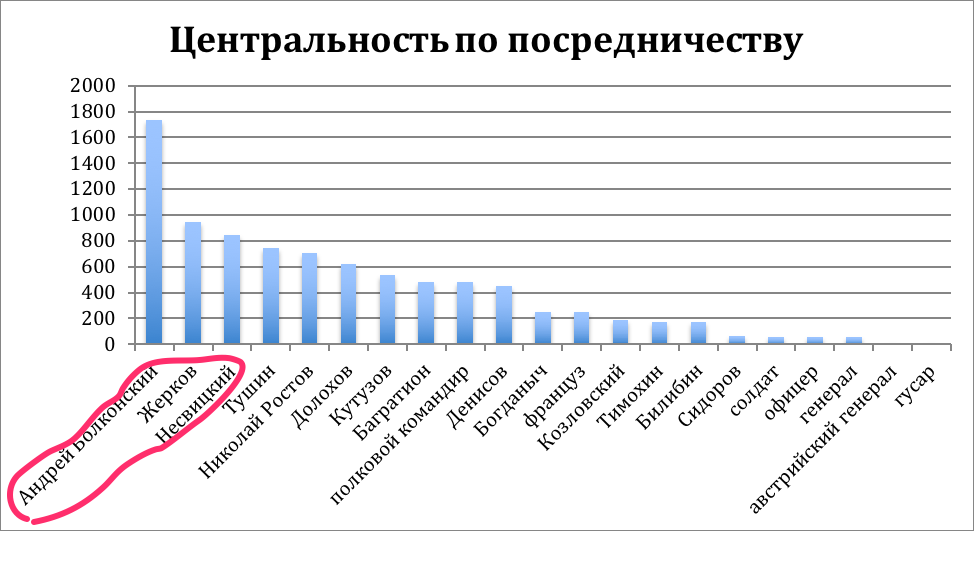
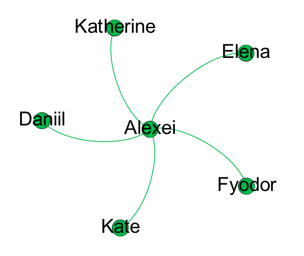
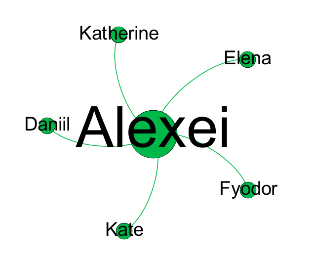
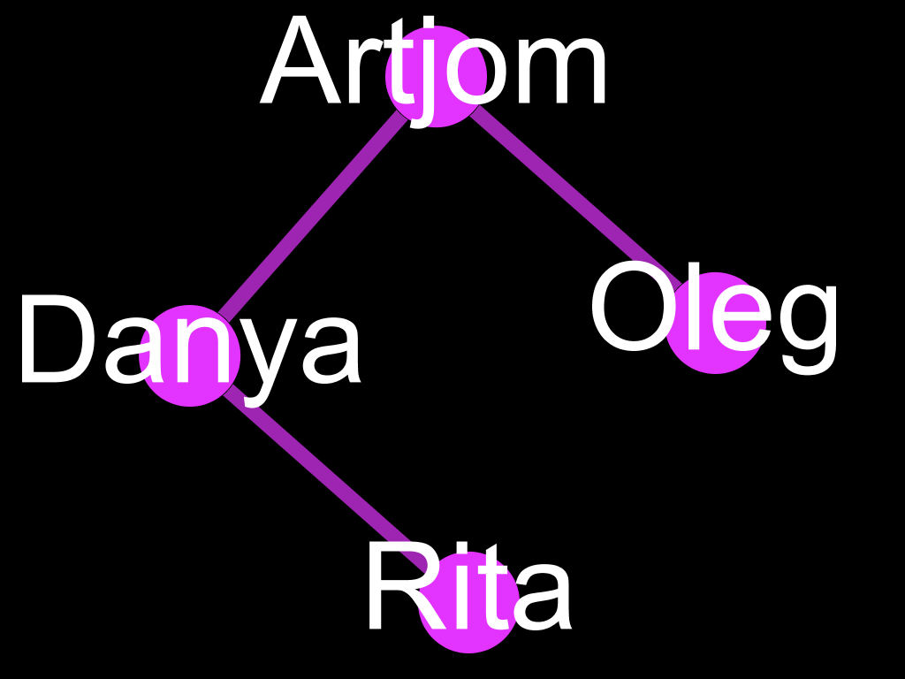
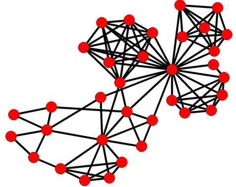
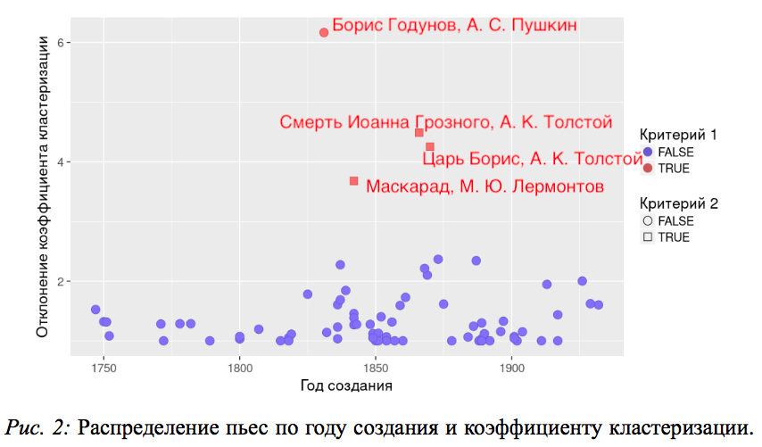

DRACOR.ORG
"Программируемый" корпус для количественного анализа драмы
20 декабря 2023, ИТМО
Даниил Скоринкин
skorinkin@uni-potsdam.de
Что такое DraCor
- Корпус (преимущественно) европейской драмы в TEI/XML для количественных исследований
- Инфраструктура по доставке данных и метаданных (API для ученых)
- Инфраструктура по созданию собственных дракоров (Docker и полная открытость кода/данных)
Состав DraCor
- 3150 пьес на 14 языках: эльзасский, башкирский, английский, французский, немецкий, (древне-)греческий, венгерский, итальянский, латынь, русский, испанский, шведский, татарский, украинский
- Скоро также: голландский, иврит, идиш, польский, чешский
- Более дальние планы: большой американский корпус, большой британский корпус
Зачем мы делаем DraCor
- Чтобы показать пример "программируемого корпуса", в котором получить данные учёному легче легкого
- Чтобы сделать хороший датасет для количественных исследований драмы (в т.ч. сравнительных)
- Мы просто любим сетевой анализ литературы, а пьесы самая очевидная "мишень" для этого метода
И в дракоре правда много сетей
Пару слов о сетевом анализе литературы
В нем вообще есть какой-то смысл?
Сети — интересная вспомогательня модель для литературоведа
Пример с сетями "Войны и мира"
Кластеризация симпатичных Толстому семей

Военные части — менее плотные сети

Адьютанты обладают высокой промежуточностью ('betweennees')

Адьютанты обладают высокой промежуточностью ('betweennees')
Максимально плотный эпилог (но две семьи )

Сетевой анализ литературы придуман не вчера
1990-е: антропологи тащат сети из SNA в литературу:

2000-е: Первые попытки масштабировать такие исследования
The Marvel Universe, сети на основе 10000+ комиксов

- Alberich, R., Miro-Julia, J., Rossello, F. (2002), Marvel universe looks almost like a real social network.
- (picture source) P. M. Gleiser. How to become a superhero. Journal of Statistical Mechanics: Theory and Experiment, (09):P09020, 2007.
..много последователей, но почти никто не литературовед:
- James Stiller, Daniel Nettle, and Robin I. M. Dunbar (2003) The Small World of Shakespeare’s Plays.Human Nature 14(4):397---408.
- “Weak Links and Scene Cliques Within the Small World of Shakespeare,” Journal of Cultural and Evolutionary Psychology 3, no. 1 (2005)
- Elson, D. K., Dames, N. and McKeown, K. (2010), Extracting Social Networks from Literary Fiction, Proceedings of ACL 2010, Uppsala, Sweden.
- J. Rydberg-Cox. Social Networks and the Language of Greek Tragedy. Journal of the Chicago Colloquium on Digital Humanities and Computer Science, 1(3):11, 2011.
- Agarwal A., Corvalan A., Jensen J., Rambow O. (2012), Social network analysis of Alice in Wonderland. Proceedings of the NAACL HLT 2012 Workshop on Computational Linguistics for Literature, pages 88–96, Montreal, Canada.
Франко Моретти 'переоткрывает' сетевой анализ для филологов

Моретти агитирует за сетевые модели
"[Networks] make visible specific ‘regions’ within the plot as a whole <...>. Take the characters who are connected to both Claudius and Hamlet <...>: except for Osric and Horatio, whose link to Claudius is however extremely tenuous, they are all killed <...>; what is truly deadly, is the characters’ position in the network, chained to the warring poles of king and prince. Outside of that bold region, no one dies in Hamlet. The tragedy is all there".
Моретти агитирует за сетевые модели
"You reduce the text to characters and interactions, abstract them from everything else, and this process of reduction and abstraction makes the model obviously much less than the original object — just think of this: I am discussing Hamlet, and saying nothing about Shakespeare’s words — but also, in another sense, much more than it, because a model allows you to see the underlying structures of a complex object. It’s like an X-ray: suddenly, you see the region of death <...> which is otherwise hidden by the very richness of the play".
DraCor позволяет масштабировать такое на сотни сетей
German Corpus: 465 plays

Сравнительный анализ структур с высоты птичего полета

Сравнительный анализ структур с высоты птичего полета

Гете и Шекспир


Теперь и на русских данных

Присмотримся к Борису Годунову А.С. Пушкина

Присмотримся к Борису Годунову А.С. Пушкина

Как и с Гете — увлечение Шекспиром
"Не смущаемый никаким иным влиянием, Шекспиру я подражал в его вольном и широком изображении характеров, в небрежном и простом составлении планов…"
"Твердо уверенный, что устарелые формы нашего театра требуют преобразования, я расположил свою трагедию по системе Отца нашего Шекспира, и принес ему в жертву пред его алтарь два классические единства, и едва сохранил последнее".
Классицизм против 'Шекспировскй исторической драмы'


Теперь сузим фокус со структур — на отдельных персонажей
Можно пытаться выявлять "типы" персонажей на основе положения в сети
Важный ли персонаж Гаврила Пушкин?
На секунду вернемся к Моретти
Though Horatio is an old fixation of mine, I had never fully understood his role in Hamlet until I looked at the play’s network structure.
Franco Moretti. Network Theory, Plot Analysis (Chapter 9 of the “Distant Reading” book)

Моретти 'препарирует' сеть
“<..>if we remove, first Hamlet, and then Horatio <..>, then the fragmentation is so radical that the Ghost and Fortinbras — which is to say, the beginning and the ending of the play — are completely severed from each other and from the rest of the plot. Hamlet no longer exists. And yet, Horatio is slightly less central than Claudius in quantitative terms”
Franco Moretti. “Distant Reading”
На самом деле для этого придуманы разные центральности
Degree (степень)
| Node | Degree centrality |
|---|---|
| Alexei | 5 |
| Daniil | 1 |
| Katherine | 1 |
| Fyodor | 1 |
| Elena | 1 |
| Kate | 1 |
Размер узла пропорционален степени:
Промежуточность/нагрузка ("betweenness"):

Размер узла пропорционален "betweenness":

Проверяем тезисы Моретти
| Character | Degree | Betweenness |
|---|---|---|
| Hamlet | 19 | 219,4 |
| Claudius | 16 | 131,6 |
| Horatio | 14 | 176,7 |
Выглядит так, что Моретти интуитивно нашел то, что можно выразить более формально центральностями. Горацио меенее централен по числу связей (степень), но более централен по "промежуточности", то самое качество, которое позволяет ему скреплять собой пьесу.
Теперь вернемся к Гавриле Пушкину!
Гаврила Пушкин: степень

Размер узла и подписи = Node Degree
Гаврила Пушкин: betweenness

Размер узла и подписи = betweenness
Gavrila the messenger
Пушкин, 'Моя родословная'
"Водились Пушкины с царями
<...>
Когда Романовых на царство
Звал в грамоте своей народ,
Мы к оной руку приложили
Ищем другие похожие фигуры
Битяговский (двойной агент)

А.К. Толстой, Смерть Иоанна Грозного (1866)
Калачник (еще один агент)

А.Н. Островский, Димитрий Самозванец и Василий Шуйский (1866)
Калачник о себе
Калачник:Что я-то?! Я не сыщик, не доносчик;
Я — весь народ московский; вот кто я!
Рецензия на современную постановку
«Довольно загадочной кажется фигура Калачника, темпераментно сыгранного Антоном Хомятовым: с одной стороны, это человек из народа — поборник православной веры, мститель за брата, с другой — «человек в штатском», тайный агент Шуйского, провокатор и шпион. Похоже на то, что его торговля калачами только «прикрытие». Один раз за весь спектакль мы видим лоток на его плече, да и то пустой. Калачник называет себя «народом», но он, пожалуй, ох как непрост?»
Битков (соглядатай при Пушкине)

М.А. Булгаков, "Пушкин, (Последние дни)" (1935)
Теперь еще разок вернемся на макро-уровень
Плотность сети как структурная метрика

Density = 0.5 (3/6) Density = 1 (6/6)
Плотности немецких комедий и трагедий

Плотности русских комедий и трагедий

More complex metric: the small-world-ness of network
Which plays have 'small world' property?
Пару слов о связи разметки и сетей
“Networks are made of vertices and edges; plot networks, of characters and verbal exchanges. In plays this works well, because words are deeds, deeds are almost always words <...>
Franco Moretti. “Distant Reading”
Act I
Scene 1
Elsinore. A platform before the castle FRANCISCO at his post. Enter to him BERNARDO
BERNARDO
Who's there?
FRANCISCO
Nay, answer me: stand, and unfold yourself.
<head>Act I</head>
<div type="scene"><head>Scene I</head>
<stage>Elsinore. A platform before the castle FRANCISCO at his post. Enter to him BERNARDO</stage>
<speaker>BERNARDO</speaker>
Who's there?
<speaker>FRANCISCO</speaker>
Nay, answer me: stand, and unfold yourself.
Dramatic text
= easy target for network formalisation
= easier to automate & scale up corpus markup!
“<...> so, basically, a network of speech acts is a network of actions”.
Franco Moretti. “Distant Reading”
We Make These Actions (and Networks) Machine-Readable with:

Text Encoding Initiative (TEI/XML)
Не только сети
Эволюция сценических ремарок (stage directions)
Stage directions, quite literally, don’t count.
Eric Rasmussen
Example of Stage Directions
<stage>Слуги уходят.</stage>
<stage>(Подходит к столу; ему дают место.)</stage>
<stage>Грохот, взрыв, выстрел. Победоносиков распахивает дверь и бросается в квартиру. На нижней площадке фейерверочный огонь. На месте поставленного аппарата светящаяся женщина со свитком в светящихся буквах. Горит слово "Мандат". Общее остолбенение. Выскакивает Оптимистенко, на ходу подтягивает брюки, в ночных туфлях на босы ноги, вооружен. </stage>
Доля сценических ремарок

Доля глаголов в ремарках

Части речи

(by Dasha Maximova)
Исследования репрезентации гендеров
<person xml:id="ZhenaLukiLukicha" sex="FEMALE">
<persName>Жена Луки Лукича</persName>
</person>
<person xml:id="Derzhimorda" sex="MALE">
<persName>Держиморда</persName>
</person>
<person xml:id="Hlestakov" sex="MALE">
<persName>Хлестаков</persName>
</person>
<person xml:id="UnterOfitsersha" sex="FEMALE">
<persName>Унтер-офицерша</persName>
</person>
<person xml:id="Korobkin" sex="MALE">
<persName>Коробкин</persName>
</person>
Исследования репрезентации гендеров